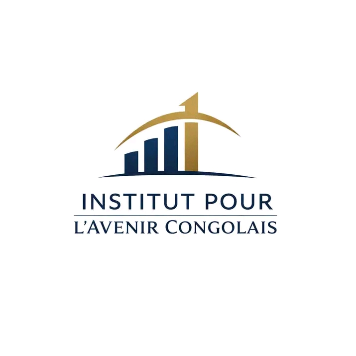

Qui sommes-nous ?
À propos de l'Institut
L’Institut pour l’Avenir Congolais (IAC) est un centre de réflexion, d’analyse stratégique et de propositions dédié à la construction d’un Congo économiquement fort, socialement stable et tourné vers l’avenir.
L’Institut est né de la conviction que le développement durable de la RDC exige des idées structurées, des méthodes rigoureuses et une vision de long terme, adaptées aux réalités congolaises.
L’IAC se positionne comme un espace neutre, inclusif et non partisan, ouvert à toutes les sensibilités constructives.

L'Excellence & La Rigueur
Au service du progrès socio-économique de la RDC.